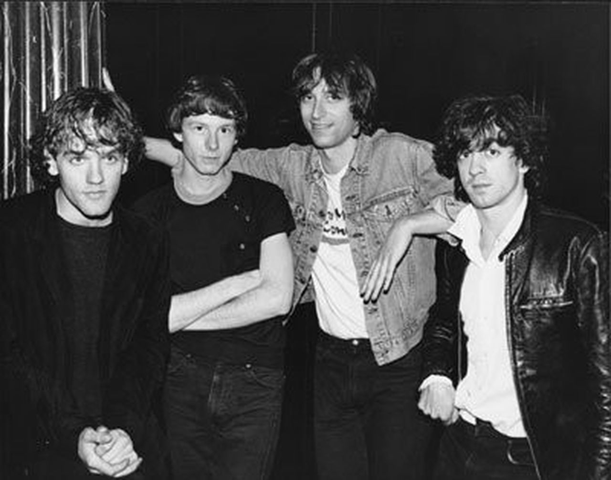
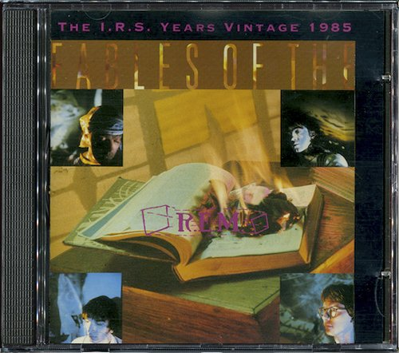
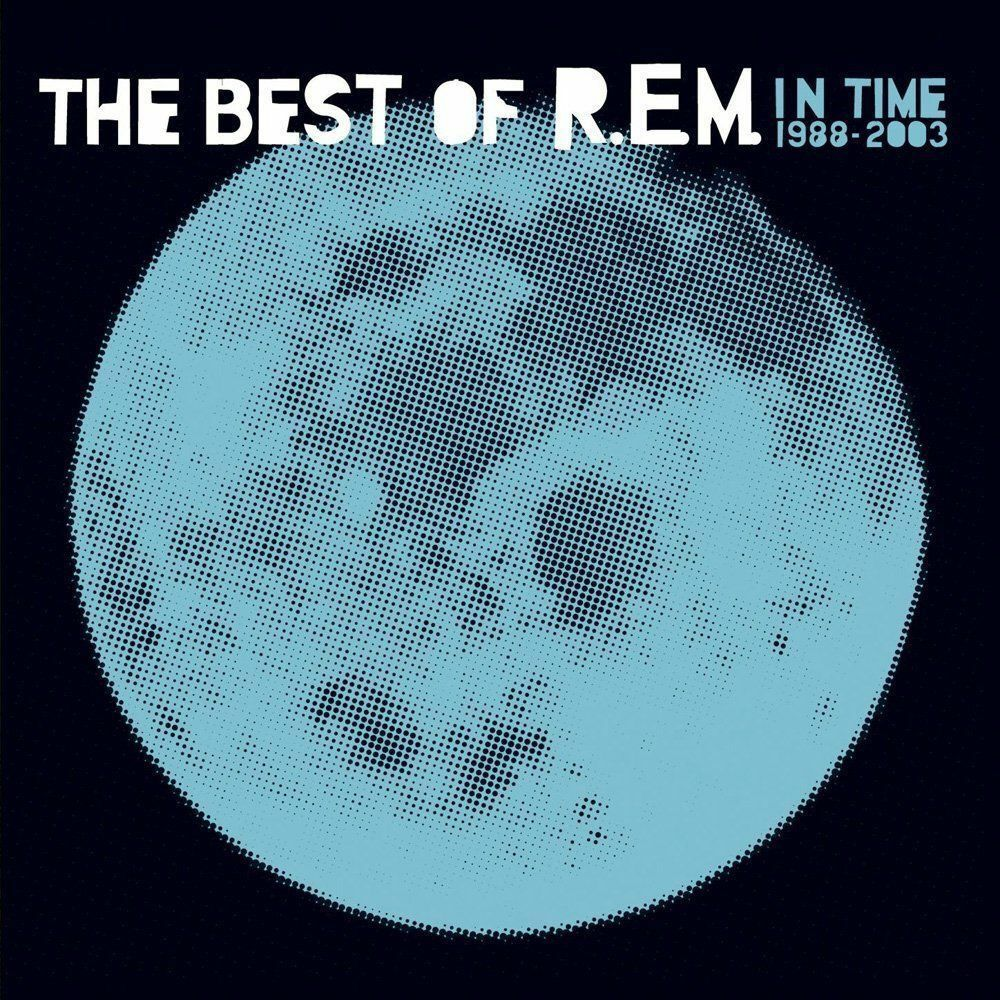
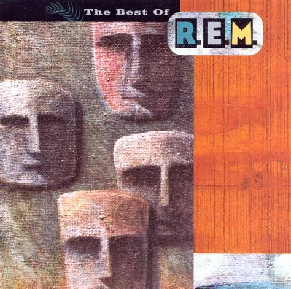
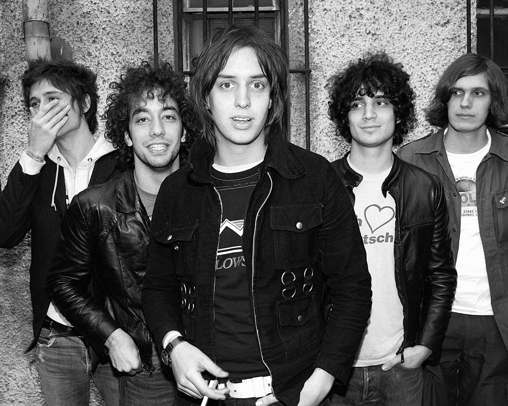
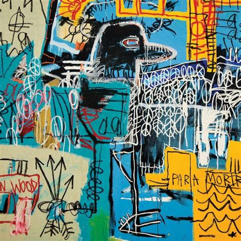
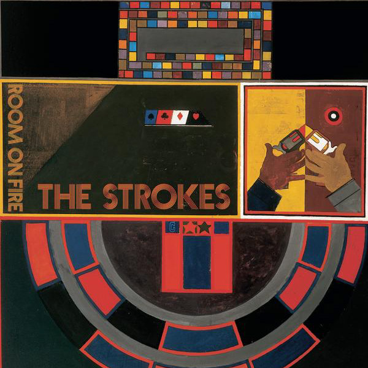
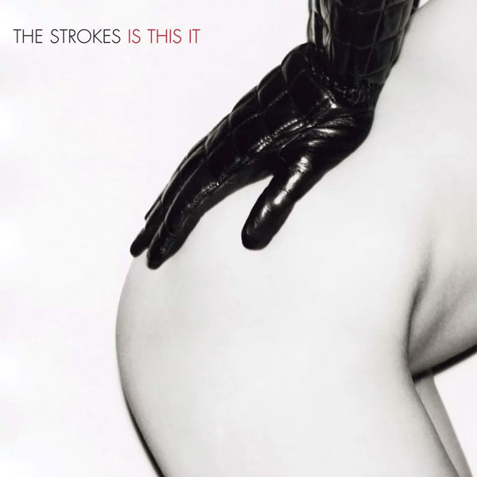
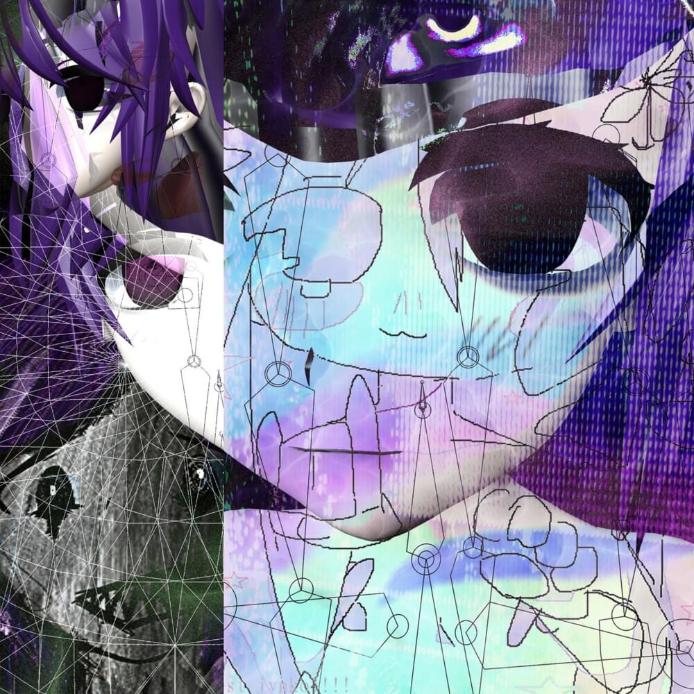
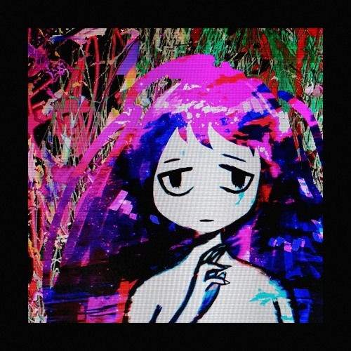

Закрыть
Галерея
R.E.M. — американская рок-группа, сформированная в городе Атенс (штат Джорджия) в 1980 году музыкантами Майклом Стайпом,
Питером Баком, Майком Миллзом и Биллом Берри. Один из наиболее важных и авторитетных
коллективов, оказавших влияние на альтернативный рок. Группа почти сразу привлекла к себе внимание аудитории мелодичным гитарным
звучанием. В 1983 году последовало издание дебютного альбома Murmur, положительно
встреченного критиками. 1987 год стал прорывом для R.E.M.: группа выпустила успешный сингл
«The One I Love», благодаря чему стала известна массовой аудитории.
В начале 1990-х, когда альтернативный рок стал пользоваться успехом среди массового слушателя, участники R.E.M.,
считавшиеся пионерами жанра, выпустили два своих наиболее коммерчески успешных альбома — Out of Time (1991) и
Automatic for the People (1992), причём стиль последнего отличался от традиционного звучания группы.
В 2007 году R.E.M. были введены в Зал славы рок-н-ролла.
Коллектив просуществовал 31 год, о его окончательном расформировании было сообщено 21 сентября 2011 года.
В конце 2011 года была издана компиляция, которая содержала песни со всех альбомов R.E.M., что стало
символической точкой в карьере группы.
Название группы расшифровывается как «Rapid Eye Movement» — медицинская аббревиатура, означающая быстрые движения глаз.
Подробнее...
|  |  |
|  |  |
Закрыть
Галерея
The Strokes — американская инди-рок-группа, образованная в 1998 году в Нью-Йорке. Музыка
коллектива относится к направлениям: гаражный рок, постпанк-ривайвл, инди-рок, альтернативнай рок.
Дебютный альбом группы «Is This It» был признан ключевым в истории, в частности, влияние группы признавали The
Libertines, Franz Ferdinand, The Killers и Arctic Monkeys.
Подробнее...
|  |  |
|  |  |
Закрыть
Галерея
Sewerslvt —
|  | |
|  |
Закрыть
1980-ые
По состоянию на 1984 год большинство групп, заключивших контракты с независимыми звукозаписывающими лейблами, черпало вдохновение из классической рок-музыки различных направлений, в особенности 1960-х годов. С этим положением резко контрастировали футуристичность и жёсткий рационализм эпохи постпанка. Постпанк представлял собой новое содружество музыкантов, журналистов, менеджеров и медиа-персонкоторые внесли большой вклад в производственную и дистрибьюторскую инфраструктуру инди-сцены, набравшей обороты в середине 1980-х годов. Впоследствии некоторые коллективы, игравшие постпанк, добавили в свою музыку больше мелодизма (позаимствовав элементы нью-вейва) и переориентировали своё творчество на американскую аудиторию. Другие, которые в то время не пользовались большим успехом среди поклонников жанра, задним числом воспринимаются как значимые представители постпанк-движения, оказавшие значительное влияние на современную популярную культуру. Помимо этого, в конце 1970-х в Нью-Йорке сформировалось авангардное движение под названием ноу-вейв, которое стало заметным явлением местной культурной жизни и зачастую рассматривается как американская версия постпанка. Постпанк стал мощным источником вдохновения для музыкантов альтернативного рока, которые отмечали разнообразие звучания этого жанра, зеркальным образом отразив интерес исполнителей постпанка к музыке новой волны. На протяжении 1980-х альтернативный рок оставался андеграундным явлением. Хотя некоторые песни становилась мейнстримовыми хитами, а отдельные альбомы получали высокие оценки со стороны обозревателей популярных музыкальных медиа, в основном жанр был представлен независимыми издательствами, фэнзинами и студенческим радио. Для продвижения своего материала альтернативные группы организовывали андеграундные концерты, постоянно гастролировали и регулярно выпускали малобюджетные пластинки.
Американский андеграунд 1980-х
Пионеры американского альтернативного рока комбинировали в своём творчестве панк-рок с фолком и мейнстримовой музыкой. Пэйсли-андеграунд зародился в Лос-Анджелесе в начале 1980-х. В музыкальном плане он представлял собой переосмысление музыки 1960-х и содержал психоделические мотивы, пышные вокальные гармонии, гитарное взаимодействие в стиле фолк-рока, а также влияние панк- и андеграундной музыки. Американские независимые лейблы были инициаторами смещения интереса аудитории от хардкорного панка, который в то время доминировал на андеграундной сцене, к более разнообразным стилям альтернативного рока. К концу 1980-х на американской альтернативной сцене сосуществовало множество разнообразных стилей, от причудливого альтернативного попа до нойз-рока и индастриала. Примерно тогда же на Северо-западе США сформировался один из ключевых поджанров альтернативы — гранж. Для гранжа было характерно нечистое, тяжёлое гитарное звучание, которое представляло собой синтез хэви-метала и панк-рока. К концу десятилетия некоторые альтернативные исполнители начали подписывать контракты с крупными лейблами. В середине 1980-х темы песен были сосредоточены вокруг личных проблем исполнителей, что оказало сильнейшее влияние на многие хардкор-группы. Под влиянием этого в Вашингтоне возникло новое направление хардкора, получившее название «эмокор» или «эмо» — его характерной чертой были тексты песен, которые затрагивали личные переживания автора, свободные ассоциативные образы и исповедальная манера.
Британские стили и тенденции 1980-ых
Готик-рок появился в конце 1970-х как ответвление британского постпанка. Вскоре жанр обрёл репутацию «самой мрачной и угрюмой формы» андеграундной музыки. Его звучание представляло собой комбинацию гитар и синтезаторов, заимствованную из постпанка, и создавало «гнетущую, депрессивную, зачастую драматичную» атмосферу, а тексты затрагивали темы романтической литературы, религиозной символики, мистики и патологий. Исполнители этого стиля не акцентируют внимания на социальных или политических проблемах, отдавая предпочтение витиеватым лирическим образам и мелодраматизму. Параллельно в Великобритании развивались ещё несколько форм альтернативного рока, такие как шугейзинг и мэдчестерское течение. Последний сочетал в себе танцевальные ритмы эйсид-хауса и мелодичную поп-музыку, а также монотонный бит и психоделические мотивы. Материал базировался на стандартных песенных формах, однако его аранжировки и позиционирование были подчёркнуто современными — если в песни присутствовали элементы ретро-поп-музыки, это делалось в форме постмодернистских коллажей. В течение нескольких лет жанр был чрезвычайно популярен в Великобритании, не последнюю роль в этом сыграла набирающая популярность рейв-культура и ажиотаж вокруг танцевальной музыки в целом. Тем не менее вскоре популярность мэдчестера пошла на спад, основные коллективы испытывали проблемы с сочинением материала.
Популяризация жанра в 1990-ых годах
К началу 1990-х годов крупные представители шоу-бизнеса оценили по достоинству большой коммерческий потенциал альтернативного рока, в связи с чем мейджор-лейблы стали активно привлекать к сотрудничеству представителей этого жанра. Помимо этого, с альтернативным роком стали экспериментировать известные медийные исполнители. Тем не менее многие альтернативные музыканты тяготились популярностью и отвергали успех, так как это шло вразрез с их бунтарской философией, приверженностью идеологии DIY, популярной в жанре до того, как он попал в мейнстрим, и собственными представлениями о художественной честности.
Альтернативный рок (также известен как альтернативная музыка, альт-рок;
англ. Alternative rock) —
жанр рок-музыки, сформировавшийся из музыкального
андеграунда 1980-х и ставший популярным в 1990-е и 2000-е годы.
В данном случае слово «альтернативный» подразумевает антитезу мейнстримовой
рок-музыке. Первоначально термин имел ещё более широкое значение,
им описывали поколение музыкантов, объединённых определёнными взглядами,
музыкальным стилем либо просто независимыми идеалами панк-рока,
заложившего в конце 1970-х основу для альтернативной музыки.
Периодически термин «альтернативный рок» использовался в качестве
универсального описания музыки андеграундных рок-исполнителей,
которые получили мейнстримовую известность, либо любой другой музыки,
считавшейся производной от панк-рока.
Альтернативный рок — собирательное понятие для музыки,
содержание которой значительно разнится в плане звучания,
социального контекста и региональных особенностей.